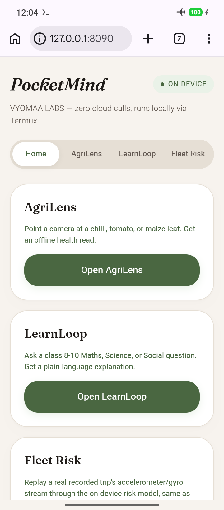
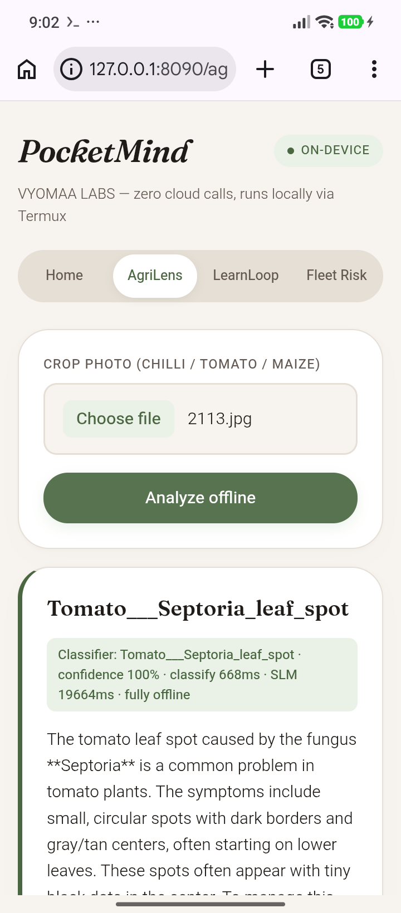
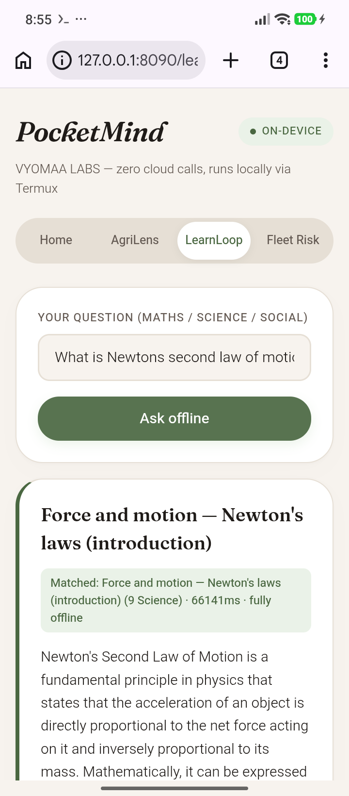
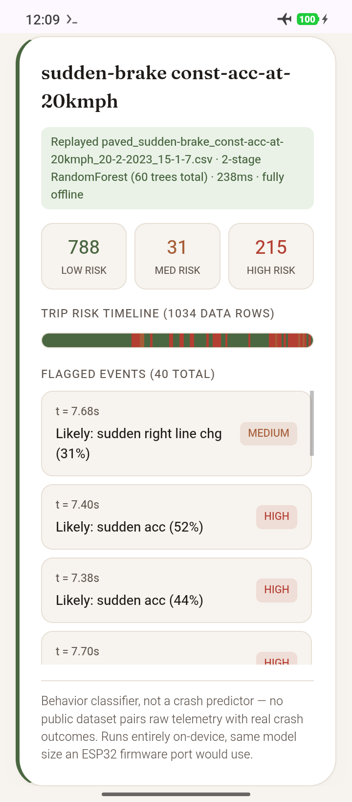
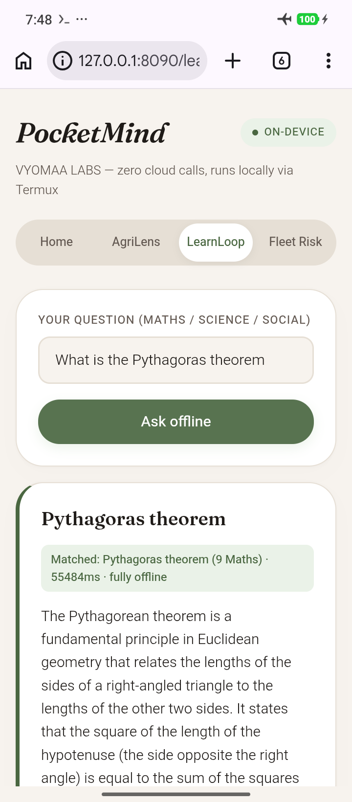

A crop-disease reader, a Class 8–10 study tutor, and a driving-risk monitor, all running a 0.5B-parameter language model entirely on a mid-range Android phone. Every answer shown on this page came from the real device, with the radios off.

A small language model running on a 3.5GB phone will hallucinate if it's allowed to answer freely — a wrong pesticide dose or a wrong formula is real-world harm, not a demo glitch. So every tool follows the same shape: retrieve a verified note first, then let the model only rephrase it. If nothing verified matches, the tool says so instead of guessing.
flowchart LR
A["Sensor input
photo / question / IMU stream"] --> B["Tiny offline classifier
or keyword retrieval"]
B --> C{"Matched a verified
ground-truth entry?"}
C -- yes --> D["Verified note
handed to the model"]
D --> E["Model rephrases only
cannot add new facts"]
C -- no --> F["'Not confident enough'
no guess given"]
E --> G["Answer shown with
confidence + timing + caveat"]
F --> G
Point the camera at a chilli, tomato, or maize leaf and get an offline disease read with sourced advice — no upload, no signal, answered in under 20 seconds on-device.

Ask a Class 8–10 Maths, Science, or Social Studies question and get a plain-language explanation matched against verified study notes — never the model's own guess.

Replay a recorded trip's accelerometer and gyroscope stream through a two-stage model and see exactly which moments were risky, how risky, and the likely behavior behind each one — the same sensor class a real ESP32 + IMU rig produces.

Redmi 24116RNC1I · Android 16 · arm64-v8a · 3.5GB RAM, roughly 1.6GB available at idle. No laptop numbers are presented as device numbers anywhere on this page.
| Model | Answer time | Quality |
|---|---|---|
| 1.5B params, Q4_K_M quantized | 42–84s | Correct, grounded, no hallucination |
| 0.5B params, task-tuned layers, Q4_K_M quantized (shipped default) | 15.3s single-shot · 15–55s under load | Correct, grounded — no quality loss found vs. 1.5B |
That RAM headroom is the actual reason there's no embedding model, no vector index, and no multi-agent framework here — there isn't memory to spare for a second heavy process, and the real retrieval task is one keyword match and one rephrase call.
Every tool was pushed with real-world photos, off-topic questions, injection payloads, malformed files, and the full 54-trip driving dataset — run on the same phone, through the same code path a user hits.
A closed-set classifier will force a guess onto any photo, even one of a desk. A 70% confidence floor, set from real lab-vs-real-world test data, catches that and asks for a retake instead of presenting a false diagnosis.
Retrieval matching is filtered against common function words, so a question can't spuriously match an unrelated note through a shared word like "the." An unmatched question is refused, not guessed at.
Trip selection is checked against a real directory listing before any file is opened, closing a path-traversal route that could otherwise reach outside the trips folder.
Across repeated back-to-back questions, answer time drifts from ~15s to 30–55s. Thermal throttling was ruled out; still comfortably inside a usable demo pace, and tracked for a closer look.

127.0.0.1 — the phone's own loopback address, not a server reachable from anywhere else.